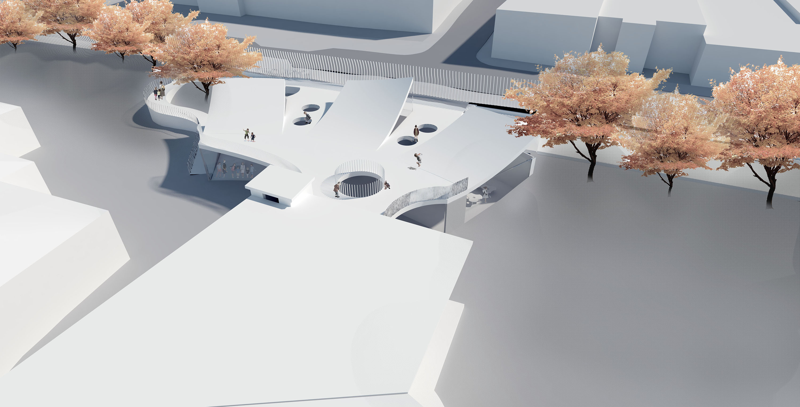
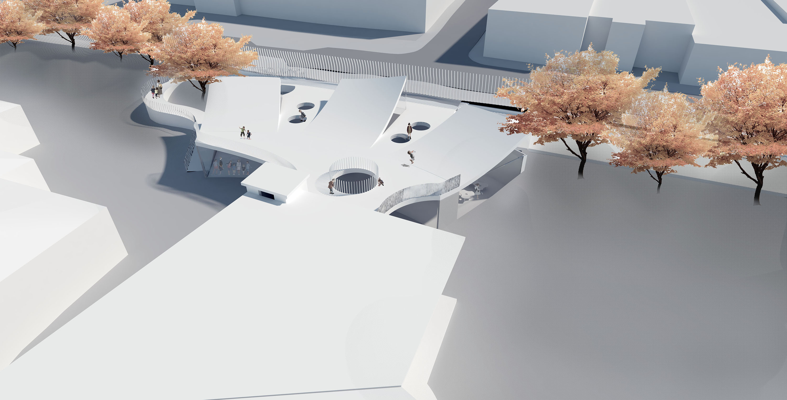
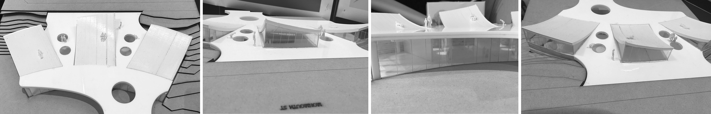
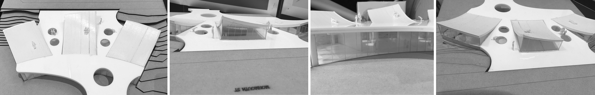

Newton Central School
Education has undergone dramatic changes, and the spaces we learn in have to adapt and accommodate this change. Schools are typically built to foster learning exclusively inside. However, with technology rapidly becoming part of our daily lives, finding a way to promote outdoor activities is becoming more and more important. As a result, improving the learning environment has become a priority. This project aims to uncover a new typology that integrates education, architecture, and landscape.
Roof areas are typically underutilized spaces when considering their large footprint. In most cases, the roof space is strictly reserved for building services. However, new urban urbanism initiatives are starting to reclaim rooftops and repurpose them, transforming them into vibrant community spaces.
By linking one space to another by utilizing the roof space, the new concept creates an uninterrupted connection throughout the school. Using the roof as a multipurpose area, it can be utilized as a play area and an outdoor learning space while also providing an access point to the school. It is intended to allow the children to use transitional spaces outside of the classrooms so that they can challenge the typical learning restrictions found in standardized learning environments.
Through the skylights of the pitched roof, natural light enters the classrooms below, helping to create a bright and open environment. On the ground floor, sliding doors open on to the courtyard, erasing the boundaries of the classroom. In this way, it is possible to seamlessly transition from interior to exterior, this will encourage an easy transition from inside to outside teaching. By making use of spaces in innovative ways, the proposed design fosters the development of the school while minimizing its footprint while blurring the lines between what a classroom is and how it impacts the children's lives.
 

 
